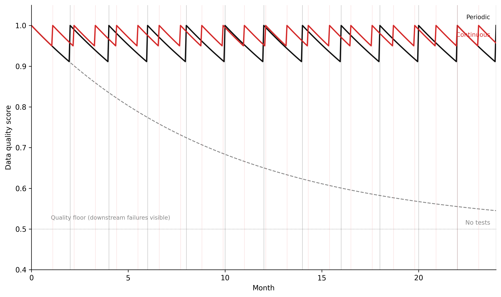

Tests, lineage, and the feedback loops that keep production data clean
8.1 The puzzle
In 2021, a consultancy delivered a spatial analysis of residential flood exposure for a mid-sized coastal local authority. The analysis estimated the number of properties within each flood risk zone, weighted by vulnerability indicators — building age, ground-floor elevation, proximity to drainage infrastructure. The client used the output to prioritise capital works over a five-year budget cycle. Two flood defence upgrades were deferred based on low calculated exposure in their catchments.
Six months after delivery, a QA reviewer at the authority was reconciling the flood exposure counts against the most recent census property register. The numbers did not match. The consultant’s analysis counted 47,800 properties in the study area. The census enumerated 54,200. The gap was 6,400 properties — 12% of the total.
The analysis was not wrong about the properties it had included. The spatial joins were executed correctly, the risk zone polygons were accurate, and the vulnerability scoring was reasonable. What it had done was silently exclude 6,400 properties from consideration entirely, because those properties had been assigned coordinates in EPSG:4326 (WGS84 decimal degrees) while the flood zone polygons were in EPSG:27700 (British National Grid). The spatial join found no intersections for those records because their coordinates were geometrically nonsensical in the projected reference frame — but the join returned empty results rather than an error. No exception was raised. No row count check was performed. The silence was interpreted as correctness.
The CRS mismatch had not been introduced at the analysis stage. It had been introduced three pipeline stages upstream, when a property attributes table from one source system was joined to centroid coordinates from another. The two tables used different reference systems. The join key was a property identifier string. The join succeeded. The coordinates were silently incorrect from that point forward.
This is the characteristic failure mode of spatial data quality problems: they do not announce themselves. A type mismatch raises an exception. A CRS mismatch returns quietly wrong answers. The only defence is tests — automated, systematic, upstream of the analysis — that catch the problem before the output is trusted.
8.2 The four dimensions of spatial data quality
Data quality in spatial systems is not a single property. It has at least four distinct dimensions, each of which can fail independently, and each of which requires different kinds of tests to detect.
Completeness asks whether all features that should be present are present. The flood exposure analysis above was a completeness failure: 12% of the properties were missing. Completeness failures can arise from dropped rows in a join, from filtering that silently excludes records, or from an upstream source that simply does not have data for certain areas. They are detected by comparing feature counts against an independent reference — a census total, a known building footprint dataset, an expected record count from a prior run. A completeness check is the spatial equivalent of a row count assertion: the expected count and the actual count must agree within a defined tolerance.
Positional accuracy asks whether geometries are where they should be. A building centroid that is 200 metres from the building is not technically invalid — it is a coordinate, it parses, it passes a geometry validity check. But it is wrong. Positional accuracy failures arise from GPS noise in field-collected data, from geocoding errors that place records in the correct postcode but the wrong location within it, and from datum shifts when coordinates are copied from one system to another without reprojection. Detecting positional accuracy failures requires a reference dataset: the distance from each point to its expected location must be within some tolerance. For address-level analysis, a tolerance of 50 metres is often appropriate. For infrastructure with sub-metre placement requirements, it might be 0.5 metres.
Attribute consistency asks whether the attributes associated with each feature are internally coherent and consistent with domain expectations. A property with a build year of 1742 that also has a recorded energy performance certificate rating is suspicious — EPCs were not issued before 2007. A road segment with a speed limit of 0 km/h is not plausible. A land parcel with a recorded area of −3.4 ha has a sign error somewhere in the processing chain. Attribute consistency tests are range checks, logic checks, and cross-field checks. In dbt terms, they are the accepted_values, not_null, and custom expression tests applied to individual columns and to relationships between columns.
Topological integrity asks whether the geometric relationships between features are valid. Polygon datasets used in spatial analysis must satisfy topology constraints that are not automatic properties of valid geometries. A polygon that is geometrically valid — it has a closed ring, no self-intersections — can still overlap with a neighbouring polygon in a way that violates the assumption of exhaustive and non-overlapping coverage. A flood zone dataset where adjacent risk zones overlap will double-count properties in the overlap area. A parcel layer with gaps between adjacent parcels will have areas that belong to no parcel — invisible voids in the coverage. These failures are silent in the same way as the CRS mismatch: the data loads, the joins execute, the analysis produces output. The output is wrong in ways that only appear if you compare the coverage explicitly against what it claims to cover.
The four dimensions are not independent. A positional accuracy failure can produce a topological integrity failure downstream: if points are shifted, the polygon they were used to construct may develop self-intersections. An attribute consistency failure can produce a completeness failure: if a quality filter is applied downstream and incorrect attribute values cause records to be filtered out, the resulting dataset is incomplete. Understanding which dimension failed, and where in the pipeline, requires lineage — the topic of a later section.
8.3 Tests with dbt
dbt is the standard tool for transformation layer testing in modern data pipelines. Its test model is declarative: tests are assertions defined in YAML schema files alongside the model definitions they apply to. The test runner executes each assertion against the materialised model and reports failures. This is the correct architecture for a data quality feedback loop: tests are co-located with the transformations they test, versioned in the same repository, and run automatically on every pipeline execution.
The built-in tests cover the most common structural assertions.
not_null asserts that a column contains no null values. Applied to geometry columns, it catches records that have been stripped of their geometry through a failed spatial operation — a ST_Intersection that returned null because two features did not actually intersect, or a geocoder that returned null for an address it could not place.
unique asserts that a column contains no duplicate values. Applied to feature identifiers, it catches the case where a join has produced cartesian-product-style duplication — a record appearing multiple times because it matched multiple rows in the join table.
accepted_values asserts that a column contains only values from a specified list. Applied to categorical spatial attributes — land use class, road classification, flood zone designation — it catches upstream encoding changes where a source system introduces a new category that the downstream model has not been updated to handle.
relationships asserts referential integrity between two models — that every value in a foreign key column exists in the referenced primary key column. Applied to the relationship between property records and their spatial units (postcode, census output area, flood zone), it catches cases where properties have been assigned to spatial units that no longer exist in the reference layer.
These four tests are necessary but not sufficient for spatial data. A property table can pass all four and still have coordinates in the wrong CRS. A polygon layer can pass all four and still have overlapping features. Spatial quality requires additional custom tests.
The following schema file illustrates dbt tests for a spatial pipeline, including both built-in and custom spatial assertions.
# models/staging/schema.ymlversion:2models:-name: stg_properties description: > Staged property records with centroids in EPSG:27700 (British National Grid). Source: LLPG (Local Land and Property Gazetteer) via daily extract.columns:-name: uprndescription: Unique Property Reference Numbertests:- not_null- unique-name: geometrydescription: Point geometry in EPSG:27700tests:- not_null- valid_geometry # custom macro: ST_IsValid(geometry)- within_national_grid # custom macro: ST_Within(geometry, national_grid_bbox)-geometry_type_is:expected_type: ST_Point-name: property_classtests:- not_null-accepted_values:values:['R','C','I','L','P','U'] # R=Residential, C=Commercial, I=Industrial, # L=Land, P=Parent, U=Unclassified-name: build_yeartests:- not_null-dbt_utils.expression_is_true:expression:"build_year >= 1600 AND build_year <= extract(year from current_date)"-name: stg_flood_zones description: > Environment Agency Flood Map for Planning zones in EPSG:27700. Zone 1 = low, Zone 2 = medium, Zone 3a = high, Zone 3b = functional floodplain.columns:-name: zone_idtests:- not_null- unique-name: geometrytests:- not_null- valid_geometry- within_national_grid-geometry_type_is:expected_type: ST_MultiPolygon-name: flood_zonetests:- not_null-accepted_values:values:['Zone 1','Zone 2','Zone 3a','Zone 3b']-name: int_property_flood_exposure description: > Properties joined to flood zones. Each property appears at most once, assigned to the highest-risk zone it falls within.tests:-dbt_utils.expression_is_true:expression:"count(*) >= 50000"name: minimum_property_count # Catch completeness failures: total count must exceed known minimumcolumns:-name: uprntests:- not_null- unique # Each property joins to exactly one flood zone-name: flood_zonetests:- not_null-accepted_values:values:['Zone 1','Zone 2','Zone 3a','Zone 3b','No Zone']sources:-name: llpgdescription: Local Land and Property Gazetteer — daily extractfreshness:warn_after:{count:2,period: day}error_after:{count:5,period: day}loaded_at_field: extract_timestamptables:-name: properties_raw
The custom macros referenced in this file — valid_geometry, within_national_grid, geometry_type_is — are not built into dbt. They are written as test macros in the project’s macros/tests/ directory. A custom test macro in dbt is a Jinja-SQL template that returns a query whose result set defines the failing records: if the query returns zero rows, the test passes; if it returns rows, the test fails with those rows as evidence.
-- macros/tests/valid_geometry.sql-- Usage: - valid_geometry (in a column test block)-- Fails for any row where ST_IsValid(geometry) returns false.-- PostGIS: invalid geometries include self-intersections, unclosed rings,-- and repeated points that collapse a polygon to a line.{% macro test_valid_geometry(model, column_name) %}select {{ column_name }} as failing_geometry,count(*) as failure_countfrom {{ model }}wherenot ST_IsValid({{ column_name }})groupby1{% endmacro %}
-- macros/tests/within_national_grid.sql-- Fails for any row whose geometry lies outside the approximate bounding box-- of the British National Grid (EPSG:27700).-- Catches CRS mismatch: WGS84 coordinates loaded into a BNG column will have-- values near (0, 51) — outside the BNG extent of (0, 0) to (700000, 1300000).{% macro test_within_national_grid(model, column_name) %}with bng_bbox as (select ST_MakeEnvelope(-100000, -100000, 800000, 1400000, 27700) as bbox)select {{ column_name }} as failing_geometry,count(*) as failure_countfrom {{ model }}, bng_bboxwherenot ST_Within({{ column_name }}, bng_bbox.bbox)groupby1{% endmacro %}
-- macros/tests/geometry_type_is.sql-- Fails for any row where the geometry type does not match the expected type.-- Catches mixed-type geometry columns produced by incorrect UNION operations-- or by source systems that return different geometry types for different records.{% macro test_geometry_type_is(model, column_name, expected_type) %}select ST_GeometryType({{ column_name }}) as actual_type,count(*) as failure_countfrom {{ model }}where ST_GeometryType({{ column_name }}) !='{{ expected_type }}'groupby1{% endmacro %}
The within_national_grid test is the one that would have caught the flood exposure problem. Any record with WGS84 coordinates loaded into a British National Grid column will have x-coordinate values near 0 and y-coordinate values near 51 — completely outside the BNG extent. The test returns those rows. The pipeline fails. The error is surfaced before the analysis runs.
8.4 Great Expectations for non-dbt pipelines
Not all spatial data pipelines run through dbt. Pipelines that consume data from external APIs, process imagery, or run batch Python jobs often do not have a SQL transformation layer. For these pipelines, Great Expectations provides equivalent functionality as a Python-native expectation framework.
An expectation in Great Expectations is an assertion about a dataset. Expectations are grouped into suites. A suite is run against a batch of data and produces a validation result: a pass/fail report with row-level detail for failures. Suites are stored as JSON and versioned with the pipeline code.
The following static code block defines a Great Expectations suite for the property centroid dataset, including custom geometry validity expectations.
Code
"""Great Expectations suite definition for stg_properties.This block is illustrative — it shows the API and expectation structure.Run against a pandas DataFrame or a SQL datasource via the GE Python API."""import great_expectations as geimport geopandas as gpdfrom shapely.validation import explain_validity# -- Load a sample batch for suite development ---------------------------------# In production, GE connects to a datasource (Postgres, S3, etc.)# For illustration, we load a GeoParquet file directly.gdf = gpd.read_parquet("data/stg_properties.parquet")# Convert to a GE DataFrame (wraps pandas with expectation methods)df = ge.from_pandas(gdf)# -- Core structural expectations -----------------------------------------------df.expect_column_to_exist("uprn")df.expect_column_to_exist("geometry")df.expect_column_values_to_not_be_null("uprn")df.expect_column_values_to_not_be_null("geometry")df.expect_column_values_to_be_unique("uprn")# -- Attribute range expectations -----------------------------------------------df.expect_column_values_to_be_between( column="build_year", min_value=1600, max_value=2025, mostly=0.999, # allow 0.1% anomalies (data entry errors in source))df.expect_column_values_to_be_in_set( column="property_class", value_set=["R", "C", "I", "L", "P", "U"],)# -- Table-level completeness expectation ----------------------------------------df.expect_table_row_count_to_be_between( min_value=50_000, max_value=70_000,)# -- Custom spatial expectations (implemented via custom expectation classes) ---# Great Expectations supports custom expectations via the Expectation base class.# These two are illustrative patterns — the full class definitions follow below.# 1. Geometry validity: every geometry must pass ST_IsValid / is_validdf.expect_column_values_to_pass_custom_spatial_check( column="geometry", check_name="is_valid", description="All geometries must be topologically valid (no self-intersections, unclosed rings).", mostly=1.0, # no tolerance: every record must pass)# 2. CRS bounding box: all centroids must lie within BNG extentdf.expect_column_values_to_pass_custom_spatial_check( column="geometry", check_name="within_bng_extent", description="All centroids must lie within the British National Grid bounding box.", mostly=1.0,)# -- Save the suite to disk -----------------------------------------------------suite = df.get_expectation_suite(discard_failed_expectations=False)suite.expectation_suite_name ="stg_properties.critical"withopen("expectations/stg_properties.critical.json", "w") as f:import json json.dump(suite.to_json_dict(), f, indent=2)
Figure 8.1
Custom spatial expectations are implemented by subclassing ColumnMapExpectation:
Code
"""Custom Great Expectations spatial expectation for geometry validity.Implements the ColumnMapExpectation base class.Returns unexpected_percent: fraction of rows where the geometry is invalid."""from great_expectations.expectations.expectation import ColumnMapExpectationfrom great_expectations.execution_engine import ( PandasExecutionEngine, SparkDFExecutionEngine,)from great_expectations.expectations.metrics import ( column_condition_partial,)from shapely.validation import explain_validityclass ExpectColumnValuesToHaveValidGeometry(ColumnMapExpectation):"""Expects all geometry values in the column to be topologically valid. A valid geometry has: - No self-intersections - Closed rings (for polygons) - No repeated points that collapse the geometry to a lower dimension - No zero-area polygons """ map_metric ="column_values.geometry_is_valid" success_keys = ("mostly",) default_kwarg_values = {"mostly": 1.0}@column_condition_partial(engine=PandasExecutionEngine)def _pandas(cls, column, **kwargs):"""Returns True for each row where the geometry is valid."""return column.apply(lambda geom: geom isnotNoneand geom.is_valid)
The advantage of Great Expectations over dbt tests for Python-native pipelines is that it runs in the same Python process as the transformation code. A GeoDataFrame returned from a custom spatial aggregation can be validated inline, before it is written to storage. In dbt, tests run after materialisation — the model is written to the database, then tested. In Great Expectations, the validation can gate the write: if the expectation suite fails, the code raises an exception and the invalid data is never persisted.
8.5 Data lineage
When the QA reviewer found the 6,400 missing properties, the first question was: which table introduced the CRS mismatch? The analysis had five upstream models. The property centroids passed through three of them before reaching the flood exposure join. Without lineage, answering that question required manually tracing the transformation code — reading each model, inspecting each join, checking each column definition. With lineage, the answer is a graph traversal: which model first introduced the geometry column, and what was the CRS of the source?
Data lineage is the directed acyclic graph (DAG) of transformations that connects source data to output. Each node is a dataset — a table, a file, a model. Each edge is a transformation — a SQL model, a Python script, a dbt model. The DAG encodes which outputs depend on which inputs, and therefore which inputs to look at when an output is wrong.
dbt builds lineage automatically. Every ref() call in a dbt model creates a node and an edge in the project DAG. dbt docs generate produces a browsable DAG that shows, for any model, all upstream sources and all downstream dependents. When a test fails on a model, the DAG tells you which models upstream could have introduced the problem. When a source data contract changes, the DAG tells you which models downstream are affected.
For pipelines that run outside dbt — Python jobs, PySpark transforms, imagery processing — lineage must be tracked explicitly. Apache Atlas and OpenLineage are the standard tools. OpenLineage defines a standard event format: when a job reads from a dataset, it emits a START event naming that dataset as an input. When it writes to a dataset, it emits a COMPLETE event naming that dataset as an output. These events are collected by a lineage backend (Marquez is the reference implementation) that assembles the full DAG across all jobs and frameworks.
The value of lineage is proportional to the value of the data. For a one-off analysis, manual tracing is acceptable. For a production pipeline that runs daily and feeds downstream operational decisions, the cost of a 6-month investigation into a data quality failure is high enough that lineage tooling pays for itself quickly.
Beyond debugging, lineage enables impact analysis. When the Environment Agency updates its flood zone polygons — a quarterly occurrence — lineage identifies every model that depends on those polygons. Those models can be scheduled for automatic re-materialisation. Without lineage, the dependency is implicit: some engineer has to remember which models use flood zone data and re-run them manually. In practice, they do not all get re-run, and stale outputs accumulate in proportion to the size of the pipeline.
8.6 Simulating data quality drift
Data quality is a stock. It starts at some level and degrades over time as the world changes and the pipeline does not. Schema changes, sensor calibration drift, reference dataset updates, and upstream encoding changes are all outflows from the quality stock. Testing is the corrective flow: tests detect quality failures, which trigger remediation, which restores quality.
The simulation below models this as a stock-flow system under three testing regimes: no tests, periodic batch tests, and continuous testing. The parameters that matter are the drift rate (how fast quality degrades in the absence of testing), the test interval (for periodic testing), and the quality floor (the worst-case quality level the system reaches before the failure becomes visible in downstream outputs).
Code
"""Data quality stock simulation — Chapter 7.Euler integration of quality stock under three testing regimes.Analogous to the retraining loop simulation in Ch 6: same stock-flow structure,different domain interpretation."""import numpy as npimport matplotlib.pyplot as plt# -- Named constants -----------------------------------------------------------QUALITY_CEILING =1.00# perfect qualityQUALITY_FLOOR =0.50# worst-case quality before downstream failures are noticedDRIFT_RATE =0.10# quality degradation per month (fraction of gap to floor)TEST_INTERVAL =2.0# months between periodic test runsDT =0.05# Euler time step (months)T_START =0.0T_END =24.0# 24-month simulation# WH paletteCOL_NONE ="#888888"# no testsCOL_PERIODIC ="#111111"# periodic testsCOL_CONTINUOUS ="#d52a2a"# continuous testsSTEPS =int((T_END - T_START) / DT) +1t = np.linspace(T_START, T_END, STEPS)def run_quality_simulation(test_regime):""" Simulate quality stock over 24 months under one testing regime. test_regime: 'none', 'periodic', 'continuous' Returns (quality_array, test_times) """ quality = np.empty(STEPS) quality[0] = QUALITY_CEILING test_times = [] last_test =-999.0for i inrange(1, STEPS): t_now = t[i] q_prev = quality[i -1]# Quality drifts toward floor at DRIFT_RATE per month d_quality =-DRIFT_RATE * (q_prev - QUALITY_FLOOR) q_new = q_prev + d_quality * DT test_now =Falseif test_regime =="periodic":# Test fires on a fixed schedule prev_interval = (t[i -1] - T_START) / TEST_INTERVAL curr_interval = (t_now - T_START) / TEST_INTERVALifint(curr_interval) >int(prev_interval): test_now =Trueelif test_regime =="continuous":# Continuous testing: any quality degradation below 0.95 triggers immediate fixif q_new <0.95and (t_now - last_test) >=0.1: test_now =Trueif test_now:# Testing detects the issue and triggers remediation: quality restored q_new = QUALITY_CEILING last_test = t_now test_times.append(t_now) quality[i] = q_newreturn quality, test_times# -- Run all three scenarios ---------------------------------------------------q_none, rt_none = run_quality_simulation("none")q_periodic, rt_periodic = run_quality_simulation("periodic")q_cont, rt_cont = run_quality_simulation("continuous")# -- Figure -------------------------------------------------------------------fig, ax = plt.subplots(figsize=(10, 6), dpi=150)ax.plot(t, q_none, color=COL_NONE, linestyle="--", linewidth=1.2)ax.plot(t, q_periodic, color=COL_PERIODIC, linestyle="-", linewidth=1.8)ax.plot(t, q_cont, color=COL_CONTINUOUS, linestyle="-", linewidth=1.8)# Mark test eventsfor rt in rt_periodic: ax.axvline(rt, color=COL_PERIODIC, alpha=0.2, linewidth=0.8)for rt in rt_cont: ax.axvline(rt, color=COL_CONTINUOUS, alpha=0.15, linewidth=0.6)# Quality floor reference lineax.axhline(QUALITY_FLOOR, color="#888888", linestyle=":", linewidth=0.7, zorder=0)ax.annotate("Quality floor (downstream failures visible)", xy=(1.0, QUALITY_FLOOR), xytext=(1.0, QUALITY_FLOOR +0.02), fontsize=8, color="#888888", va="bottom")# Scenario labels at right edgelabel_data = [ ("No tests", t, q_none, COL_NONE, -0.03), ("Periodic", t, q_periodic, COL_PERIODIC, 0.02), ("Continuous", t, q_cont, COL_CONTINUOUS, 0.02),]for label, t_, q_, col, offset in label_data: ax.annotate(label, xy=(t_[-1], q_[-1]), xytext=(t_[-1] -0.3, q_[-1] + offset), fontsize=8.5, color=col, ha="right", va="center")ax.set_xlim(T_START, T_END)ax.set_ylim(0.40, 1.05)ax.set_xlabel("Month")ax.set_ylabel("Data quality score")ax.spines["top"].set_visible(False)ax.spines["right"].set_visible(False)ax.grid(False)plt.tight_layout(pad=1.5)plt.savefig("_assets/ch07-quality-drift.png", dpi=150, bbox_inches="tight")plt.show()

Figure 8.2: Figure 7.1. Data quality score over 24 months under three testing regimes. Without tests, quality degrades monotonically toward the floor. Periodic tests produce a sawtooth: quality recovers after each test cycle but decays between them. Continuous testing maintains quality near its ceiling because failures are detected and corrected before significant degradation accumulates. The gap between periodic and continuous testing is largest when the drift rate is high relative to the test interval.
The simulation makes the structural argument concrete. With no tests, quality drifts monotonically toward the floor. With periodic testing, quality recovers on schedule but decays between test cycles — and the depth of the decay depends on both the drift rate and the test interval. With continuous testing, quality stays near the ceiling because the corrective flow operates faster than the drift flow. The policy implication is the same as for the retraining loop in Chapter 6: the testing regime is the balancing loop, and its frequency relative to the drift rate determines whether the system maintains quality or degrades.
8.7 Governance policies
Data quality testing keeps the data clean. Governance policies define who can access it, how long it is kept, and what constraints apply to how it is used. In spatial systems, governance has specific complications that non-spatial data governance does not share.
Access control. Not all spatial data should be readable by all pipeline users. A pipeline that processes precise GPS tracks from mobile devices contains location history that is sensitive regardless of whether names are present — a route from home to an addiction treatment clinic three times per week identifies the person’s health status as reliably as a medical record. Role-based access control (RBAC) in the data warehouse must reflect this: raw GPS tracks should be accessible only to the team responsible for privacy-preserving processing, not to every analyst who can query the database. The transformed output — aggregated to 200-metre grid cells, or represented as a set of visited neighbourhoods — can have broader access. The access policy must be defined at the stage where the privacy risk exists, not only at the stage where the data is published.
Data retention. Spatial data has temporal depth. A dataset of property locations is not particularly sensitive. A dataset of property locations linked to visit timestamps over 12 months is a location history — it reveals where someone lives, works, and travels. GDPR Article 5(1)(e) requires that personal data be stored no longer than necessary for the specified purpose. For spatial data derived from user devices, “necessary” typically means the duration of the service that generates it, not indefinitely. The pipeline’s data retention policy must delete or aggregate the location history after the processing window closes. A pipeline that accumulates location data indefinitely because no one decided to delete it is a governance failure, not a data quality failure — but its consequences, in the event of a breach, are indistinguishable.
PII in spatial data. GPS tracks are PII. Property addresses are PII when linked to a named individual. Land registry records are public. The distinction matters because the pipeline design must reflect it: a table that joins GPS tracks to property addresses to named individuals from a CRM system is now a sensitive data asset at the level of its most sensitive component, regardless of whether the GPS tracks or the property addresses are sensitive in isolation. k-anonymity thresholds applied to spatial data — ensuring that any point falls within a cell that contains at least k individuals — are the standard technique for transforming precise location data into a form that can be used for analysis without revealing individuals. The threshold k must be chosen based on the sensitivity of the location context: visits to a supermarket require a lower k than visits to a healthcare facility.
GDPR and precise location data. The GDPR classifies location data as potentially sensitive under Article 9 when it reveals a person’s visits to places that disclose health, religion, political opinion, or trade union membership. This is not a marginal case. A spatial join that links GPS coordinates to a database of locations — GP surgeries, places of worship, political party offices, trade union offices — can retroactively convert a non-sensitive location dataset into a special category dataset, triggering higher processing obligations. The data engineer building that join is responsible for recognising this transformation. The governance framework must include a pre-join review step when the join has this property.
TipWhat to try
Increase the drift rate (DRIFT_RATE = 0.20). At twice the drift rate, how does the periodic testing regime perform compared to continuous? Is there a test interval that maintains quality above 0.80 under this higher drift rate, and if so, what is it? Compare the total number of tests required by periodic testing at that interval against the number required by continuous testing.
Lower the quality floor (QUALITY_FLOOR = 0.35). The floor represents the point at which quality failures become visible in downstream outputs. A lower floor means failures take longer to become visible — the system tolerates more silent degradation. How does this change the relative performance of the three testing regimes? Which regime is most sensitive to the floor level, and why?
Model test coverage as a parameter. In the current simulation, a test run fully restores quality to the ceiling. In reality, tests only cover the dimensions they were written for. Add a test_coverage parameter (0.0–1.0) that scales the quality restoration: a test run with coverage 0.6 restores quality by 60% of the gap to the ceiling. At what test coverage does periodic testing outperform no testing over the 24-month window? What does this imply about the value of writing more tests vs. running the same tests more frequently?
A property centroid table contains 60,000 records. It is loaded from a source system that delivers coordinates in WGS84 (EPSG:4326). The downstream pipeline expects coordinates in British National Grid (EPSG:27700). A processing error in the ingestion script omits the reprojection step for records from one source system, so 8,000 records arrive with WGS84 coordinates instead of BNG.
Write a dbt custom test macro test_within_national_grid that identifies all records whose geometry falls outside the BNG bounding box. Specify the SQL logic and the bounding box values you would use. What are the approximate x and y ranges of the BNG extent?
WGS84 decimal degree coordinates for the UK have approximate ranges of longitude −8 to +2 and latitude 49 to 61. BNG easting/northing coordinates for the UK range from approximately 0 to 700,000 (easting) and 0 to 1,300,000 (northing). Explain why the two coordinate systems’ values do not overlap, and why this makes a bounding box test effective for detecting CRS mismatches in a UK dataset.
The test identifies the 8,000 misreprojected records. Propose a remediation workflow: which dbt model needs to change, and at which stage in the DAG should the reprojection step be applied? What test would you add to verify that the remediation was successful?
7.2 — dbt schema test design
You are building a dbt model int_flood_risk_scores that joins property records to flood zone polygons and computes a composite risk score for each property. The model takes three upstream inputs: stg_properties, stg_flood_zones, and ref_vulnerability_scores.
Write a schema.yml block for int_flood_risk_scores that includes: (i) a not_null and unique test on the property identifier; (ii) an accepted_values test on flood_zone; (iii) a relationships test linking the property identifier back to stg_properties; and (iv) a table-level row count assertion that the output must contain at least 95% of the input property count.
Explain what failure mode each of the four tests in (a) is designed to detect. For the row count assertion, describe the pipeline step that could silently drop rows and explain why a percentage threshold is more appropriate than an absolute count.
The ref_vulnerability_scores table is updated quarterly by an external data provider. Add a dbt source freshness check that warns after 95 days without an update and errors after 110 days. Explain why the thresholds are set at those values rather than exactly 90 days.
7.3 — Governance and PII
A smart city mobility project collects GPS tracks from a fleet of 3,000 shared bicycles. Each track contains: timestamp, bike ID, latitude, longitude, and a session identifier that links the track to a registered user account.
Classify the data assets in this pipeline by sensitivity level: (i) raw GPS tracks with session identifiers, (ii) GPS tracks with session identifiers removed but bike IDs retained, (iii) GPS tracks aggregated to 500-metre grid cells with counts per cell per hour, and (iv) the user account table. Justify each classification with reference to GDPR categories.
The data engineering team needs to use this data to compute a heatmap of bicycle usage intensity for urban planning purposes. Describe a data transformation pipeline that produces the heatmap without retaining any data that could be used to reconstruct individual journeys. Specify: the spatial aggregation method, the temporal aggregation method, the minimum count threshold below which cells are suppressed, and the retention policy for intermediate data.
A researcher requests access to the raw GPS tracks with session identifiers for a study of commuting behaviour. Under what conditions, if any, could this access be granted? Identify the GDPR legal basis that would apply and the technical and contractual safeguards that would be required.
7.4 — Data lineage for impact analysis
A spatial pipeline has the following DAG structure: raw_os_mastermap → stg_os_mastermap → int_land_parcels → int_flood_risk_scores → fct_flood_exposure_summary. The raw_os_mastermap source is updated by Ordnance Survey on a 6-month release cycle.
OS Mastermap releases a new version that changes the geometry of 15,000 land parcels in a coastal area due to a beach erosion re-survey. Which models in the DAG need to be re-materialised following this update? In what order must they be re-materialised, and why does the order matter?
A test on int_flood_risk_scores begins failing after the OS Mastermap update. The test is a row count assertion: the model count has dropped by 3,200 records. Using the lineage DAG, describe the investigation process: which models would you examine in sequence, and what specific check at each model would help you identify where the drop occurred?
The team adds a new source raw_environment_agency_flood_zones, which also feeds into int_flood_risk_scores. Draw the updated DAG and identify any models that now have multiple upstream dependencies. What additional governance consideration applies when a model has two sources that are updated on different schedules?
8.9 Build this
A dbt project for a spatial flood risk pipeline, with schema tests, custom spatial test macros, and source freshness checks.
version:2sources:-name: llpgschema: rawdescription:"Local Land and Property Gazetteer — daily extract from NLPG"freshness:warn_after:{count:2,period: day}error_after:{count:5,period: day}loaded_at_field: extract_timestamptables:-name: properties_rawdescription:"Raw property records with UPRN, address, and BNG coordinates"-name: environment_agencyschema: rawdescription:"Environment Agency Flood Map for Planning — quarterly release"freshness:warn_after:{count:95,period: day}error_after:{count:110,period: day}loaded_at_field: published_datetables:-name: flood_zones_rawdescription:"Flood risk zone polygons for England in EPSG:27700"
models/staging/stg_properties.sql:
-- Staged property records.-- Reprojects coordinates from source SRID (if not already 27700)-- and casts UPRN to text for consistent join keys.withsourceas (select*from {{ source('llpg', 'properties_raw') }}),staged as (select uprn::textas uprn, ST_Transform( ST_SetSRID(ST_MakePoint(easting, northing), 27700), {{ var('srid') }} ) as geometry, property_class, build_year::integeras build_year, extract_timestampfromsourcewhere uprn isnotnulland easting isnotnulland northing isnotnull)select*from staged
models/intermediate/int_flood_exposure.sql:
-- Property flood exposure join.-- Assigns each property to its highest-risk flood zone.-- Properties outside all flood zones are assigned 'No Zone'.with properties as (select*from {{ ref('stg_properties') }}),flood_zones as (select*from {{ ref('stg_flood_zones') }}),-- Spatial join: find all flood zones that contain each property centroidproperty_zone_matches as (select p.uprn, p.geometry, fz.flood_zone, fz.zone_id,-- Risk order: 3b > 3a > 2 > 1 > No Zonecase fz.flood_zonewhen'Zone 3b'then5when'Zone 3a'then4when'Zone 2'then3when'Zone 1'then2else1endas risk_rankfrom properties pleftjoin flood_zones fzon ST_Within(p.geometry, fz.geometry)),-- Select the highest-risk zone for each propertyranked as (select uprn, geometry, flood_zone, zone_id,row_number() over (partitionby uprnorderby risk_rank desc ) as rnfrom property_zone_matches),final as (select uprn, geometry,coalesce(flood_zone, 'No Zone') as flood_zone, zone_idfrom rankedwhere rn =1)select*from final
models/intermediate/schema.yml — with spatial tests:
version:2models:-name: int_flood_exposure description: > Property flood exposure: one row per property, assigned to highest-risk flood zone. Row count must be within 1% of stg_properties row count (completeness check).tests:-dbt_utils.expression_is_true:expression:"count(*) >= {{ var('min_property_count') }}"name: minimum_property_countcolumns:-name: uprntests:- not_null- unique-relationships:to: ref('stg_properties')field: uprn-name: geometrytests:- not_null- valid_geometry- within_national_grid-name: flood_zonetests:- not_null-accepted_values:values:['Zone 1','Zone 2','Zone 3a','Zone 3b','No Zone']
Run the full pipeline and tests with:
dbt deps # install dbt packages (dbt-utils)dbt source freshness # check source data currencydbt run # materialise all modelsdbt test # run all schema testsdbt docs generate # build DAG documentationdbt docs serve # serve docs at localhost:8080
The dbt docs serve command produces an interactive DAG view where each model shows its upstream sources, downstream dependents, and test results. When the within_national_grid test fails, the DAG view shows immediately which model contains the failing rows and which source fed that model — the lineage that would have resolved the six-month investigation in minutes.